Create WordCamp badges with the Badge Designer
Design your attendee badges in wp-admin, place the attendees' names, Gravatars and QR codes over your own artwork, and get one print-ready PDF for the print shop. The PDF is made in your browser: no extra software, no spreadsheets, no scripts.

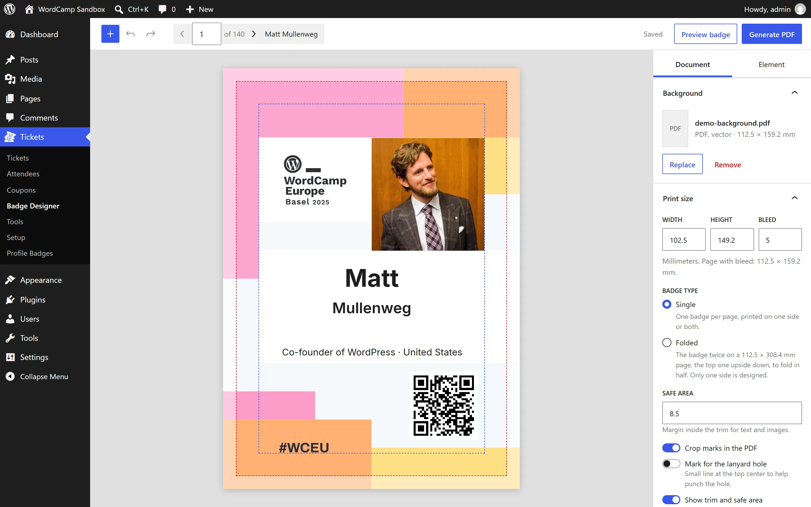
This is a test version. CampTix Badge Designer is a standalone plugin for now, so organizers and the community can try it. Once it has been tested, it will be proposed for WordCamp.org as a new way to make badges in the CampTix Badge Generator plugin that every WordCamp site already has. This guide is meant to become part of the WordCamp Organizer Handbook.
Why a new way to make badges
Until now, WordCamp badges have been made in one of two ways, both described in the handbook:
- HTML and CSS, in Tickets › Tools › Generate Badges: badges are styled with CSS in the Customizer and printed from the browser on letter-size pages. Easy, but limited, and the result depends on the browser's print settings.
- InDesign: export the attendees as CSV, run a PHP script from the command line to download the Gravatars, and lay out the badges with Data Merge. The best results, but it needs Adobe InDesign and a developer on the team.
The Badge Designer gives you the InDesign result with the effort of the HTML option:
- A visual editor in wp-admin: you place the fields over your artwork and see each attendee's badge exactly as it will print.
- Your own artwork as the background: a PDF from any design tool (Figma, Canva, Illustrator, Affinity, Inkscape…), which stays vector, or a PNG or JPG.
- Any badge size, with bleed, safe area and crop marks, the way print shops expect them.
- The attendees' Gravatars, a QR code to their WordPress.org profile, and the answers to your ticket questions: job title, company, country, hometown, anything your event asks.
- A single PDF with one badge per page, made in your browser in seconds. Nothing is installed on your computer and nothing heavy runs on the server.
Try it in your browser
The live demo runs a complete WordCamp-like site in your browser with WordPress Playground. Nothing to install, nothing to log in to.
- It takes about 40 seconds to load: it installs WordPress, CampTix from the WordCamp.org code and this plugin, and creates the tickets and the attendees.
- It opens the editor with a sample design on the WordCamp Europe 2025 badge, ready to print.
- The 140 attendees are invented, except the first one, Matt Mullenweg, with his public Gravatar and WordPress.org profile, so you can see a complete badge.
- Everything happens in your browser and nothing is kept: reload the page and you get a fresh site. Change anything you like.
If the demo stops with "WordPress request transport did not start", an ad blocker or privacy extension is blocking Playground. Turn it off for playground.wordpress.net and reload.
Prepare the background
The background is your badge artwork without the attendee data: logos, colors, sponsors, the hole for the lanyard. Make it in any design tool, leaving room for the name, the photo and the QR code.
Size, bleed and safe area
- Print size (trim): the size of the badge once it is cut. The default is 100 × 150 mm; any size from 20 to 500 mm per side works. Ask your print shop or check your badge holders.
- Bleed: the artwork has to go beyond the trim on every side, so no white edge is left if the cut is slightly off. 3 mm is common; ask your print shop. The background file must include it: for 100 × 150 mm with 3 mm bleed, the background is 106 × 156 mm.
- Safe area: keep text and important images at least this far inside the trim (5 mm by default). The editor shows it as a dashed line.
Single or folded
Badges are usually printed in one of two ways, and you design only one side in both:
- Single: one badge per sheet, printed on one side, or on both with the same design.
- Folded: a sheet twice as tall, folded in half, so the badge reads the same whichever way it turns on the lanyard. Each page of the PDF has your badge twice: the bottom one upright and the top one upside down, joined at the fold. The bleed at the fold is cut away, so the two halves meet exactly on the fold line.
Make the background for one side, with bleed on all four edges, in both cases. The editor asks for the badge type when you choose the background, and you can change it later in Print size.

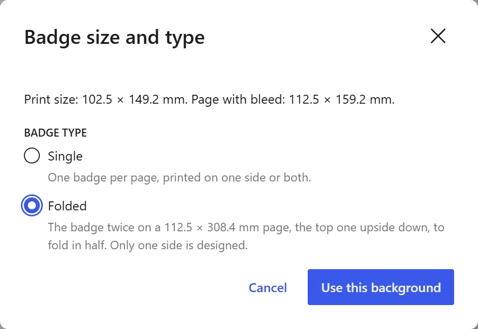

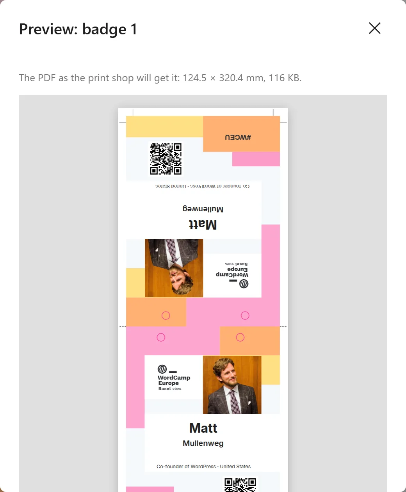
File format
- PDF (recommended): export your artwork as a PDF with bleed. It stays vector in the final PDF, so it prints sharp at any size, and the badges file stays small. Only the first page is used.
- PNG or JPG: fine too, at 300 dpi for print. The editor shows the resolution and warns when it is too low: 100 × 150 mm with 3 mm bleed needs 1252 × 1843 pixels.
Choose the background
In the Document tab, open Background and choose the file from the Media Library (or upload it there).

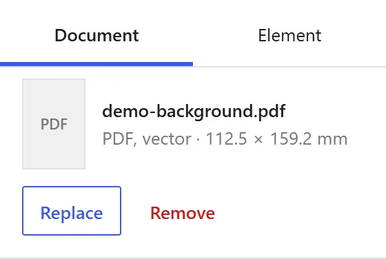
The editor then asks for the badge type, single or folded, and checks the background against the print size:
- A PDF knows its physical size. If it matches the page with bleed, it is used as it is. If not, the editor shows the PDF's size and asks how much of it is bleed, and sets the print size from it.
- An image only has pixels. If its proportions match, it is used as it is. If not, the editor asks for the badge width and the bleed, and the height follows the image's proportions.
- If you change the print size later and the background no longer fits, the editor warns that it is stretched and offers to adjust the print size.
The editor at a glance
- Toolbar: the + button adds elements; undo and redo; the attendee pagination (the badge number, the total and the attendee's name); the save state; Preview badge and Generate PDF.
- Canvas: the badge, filled with the data of the attendee on screen. The red dashed line is the trim and the blue one the safe area; the bleed outside the trim is shown too. None of this is printed.
- Sidebar: the Document tab holds the settings of the whole badge; the Element tab, those of the element you select.
Your work is saved automatically a second after each change, and the toolbar says so ("Saved"). Close the page and come back later: everything is as you left it.
Print size
Width, height and bleed in millimeters of one side, the badge type (single or folded), the safe area, crop marks (on by default), a mark for the lanyard hole (on by default) and whether the guides are shown.
- Mark for the lanyard hole: a small line at the top center of every badge, about 15 mm long, to help punch the hole in the center. On a folded badge it starts at the fold. Turn it off if your artwork already marks the hole.
- If you make the badge smaller and some elements end up past its edge, they are marked in red and listed in the Print size and Elements panels. Move them inside brings them back within the safe area; an element wider than the safe area is centered on the badge.

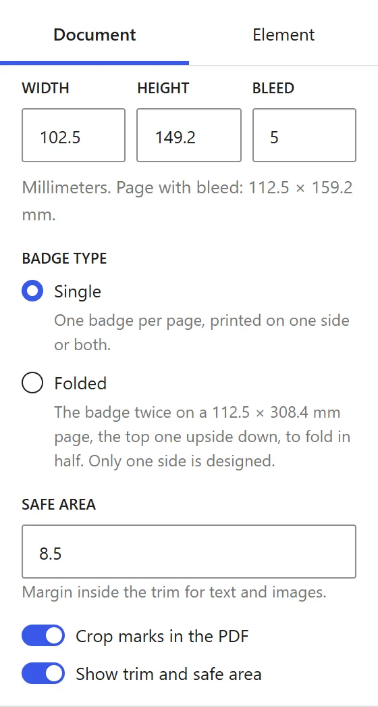
Add and arrange elements
A badge is made of elements over the background. There are three kinds: text boxes, the Gravatar and the QR code. A new design starts with the most common ones already in place: the Gravatar, the first name, the last name and the QR code. Add more with the + button in the toolbar.
- Select an element by clicking it on the badge, or by its name in the Elements panel. Its settings open in the Element tab.
- Move it by dragging. It snaps to the center lines of the badge.
- Resize it from its corners. Gravatars and QR codes stay square.
- Nudge it with the arrow keys: 0.5 mm per press, 5 mm with Shift.
- Delete it with Delete, or deselect it with Esc.
- Undo and redo anything with Ctrl Z and Ctrl Shift Z (⌘ on a Mac), or the toolbar buttons.
- For exact values, open Position and size in the Element tab: millimeters from the top-left corner of the trim.
The Elements panel lists them from the top layer down. Use the arrows to bring an element forward or send it backward, and the bin to delete it.

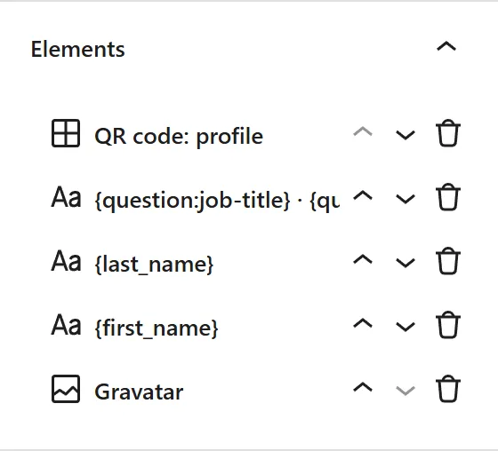
Text boxes
A text box holds text and variables, which are replaced with each attendee's data. Pick them from Insert variable or type them in braces:
| Variable | What it prints |
|---|---|
{first_name} | The first name. |
{last_name} | The last name. |
{full_name} | First and last name. |
{username} | The WordPress.org username, as @username. Nothing for attendees without one. |
{question:job-title} | The answer to a ticket question, here "Job title". Every question of your event is in the list, with its own name. |
Mix them with your own text, for example {question:job-title} · {question:country}. When an attendee left a question empty, its separator goes too: the badge says "Italy", not "· Italy". Separators are ·, •, |, /, ,, ;, : and dashes. A variable with a typo is printed as typed, so you notice it.

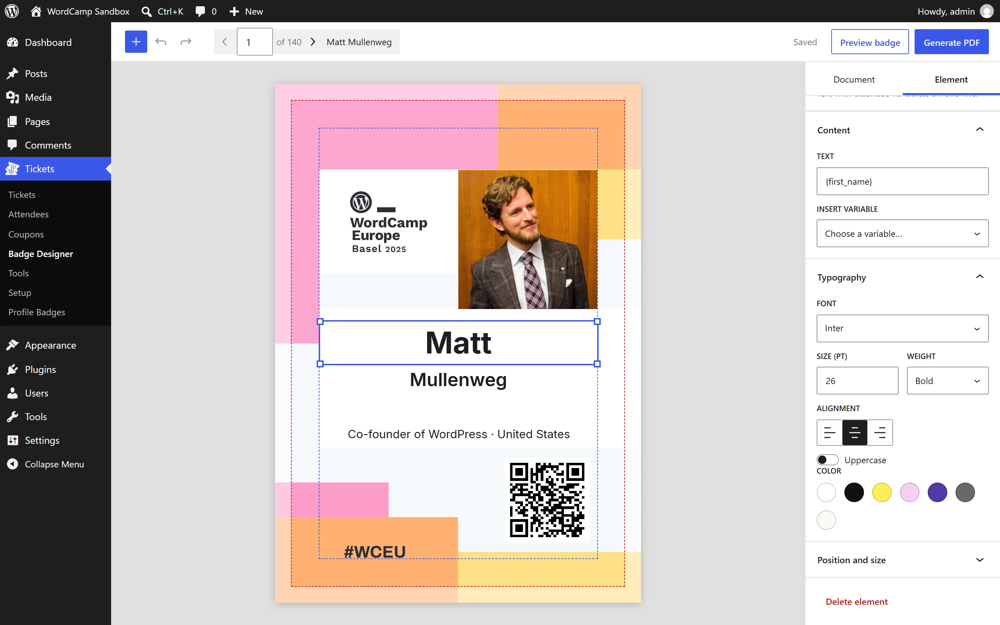
Each text box has:
- Font: Inter, included with the plugin, or any font installed on the site through the Font Library (Appearance › Fonts), Google Fonts included. A font you install only for the badges can stay inactive there: an inactive font is not loaded on the event's website, so it does not slow it down, and the badge editor can still use it. Only upright fonts with one file per weight are listed; variable fonts, such as the ones that come with the theme, are left out.
- Size in points, weight, alignment and uppercase.
- Color from the site's color palette, or any other color with Custom. Colors are always solid, with no transparency.
Names are tidied up before they are printed: a name typed all in capitals or all in lowercase ("MARÍA", "garcía", "O'BRIEN", "MCDONALD") gets normal capitals ("María", "García", "O'Brien", "McDonald"). Names typed with mixed case, such as "DeLuca", are left as they are. Particles such as "de", "van" or "le" stay in lowercase before a surname ("de la Fuente", "van der Berg"), but not when they are the name itself ("Le Van").
Text that does not fit
A text box is always one line. When an attendee's text is longer than the box, it is made a little smaller, down to 80% of its size. That is enough for most long names, and the badges still look even on a lanyard.
If it still does not fit, it is cut after the last whole letter that fits and ends with an ellipsis (…), and the editor warns you so you can check it before printing: make the box wider, the text smaller, use a shorter variable, or fix the attendee's data in CampTix. There is never a second line, on purpose:
- Text never grows into the photo or the QR code, and every badge keeps the same layout.
- Attendees type their own data. Very long names are usually a company, a job title or a handle added to the name, by mistake or to fill the badge with spam: whatever does not fit is left out.

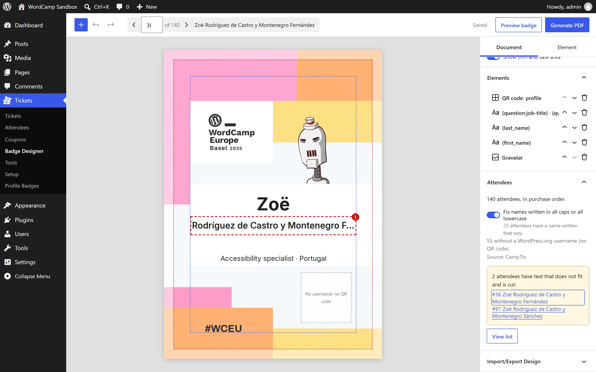
Names in other scripts
Inter, the font included with the plugin, covers Latin (Vietnamese included), Greek and Cyrillic. It has no Japanese, Chinese, Korean, Indic scripts, Arabic, Hebrew or Thai. A font can only print the characters it has, so the editor checks every attendee's text against the font of each text box:
- When the box's font lacks some letters and Inter has them, that attendee's text prints in Inter. For example, Noto Sans JP lacks some Central European letters, so "Łukasz" prints in Inter at an event that uses Noto Sans JP. The Element tab tells you how many attendees print in Inter.
- Otherwise, a warning under the font selector tells you which script is missing and which font to install. The Attendees panel lists those attendees, and Generate PDF counts them. Their characters would print as empty boxes.
For an event where many attendees write their names in another script, pick a font that has it for your text boxes. Install it from Appearance › Fonts, in the Google Fonts tab, and leave it inactive if the event's website does not use it. These Noto fonts also have the common Latin letters, so names in Latin print with them too:
| Script | Font to install |
|---|---|
| Japanese | Noto Sans JP |
| Chinese | Noto Sans SC (simplified) or Noto Sans TC (traditional) |
| Korean | Noto Sans KR |
| Devanagari (Hindi, Marathi, Nepali) | Noto Sans Devanagari |
| Bengali, Tamil, Telugu, Kannada, Malayalam, Gujarati, Gurmukhi | Noto Sans Bengali, Noto Sans Tamil, and so on |
| Hebrew | Noto Sans Hebrew |
| Thai | Noto Sans Thai |
| Arabic | Noto Sans Arabic |
Noto Sans Arabic has no Latin letters. A box that mixes Arabic and Latin, such as a name and a country in one line, cannot print in any single font: split it into two boxes.
Gravatar
The attendee's Gravatar, from the email address they bought the ticket with.
- Shape: round or square.
- When there is no Gravatar: print nothing, so the background shows; one of the images Gravatar generates for each address (identicon, monster, wavatar, retro or robot); or your own image from the Media Library, for example the WordCamp logo.

Before printing, remind your attendees to add a photo to Gravatar with the email address of their ticket. You can email them all from Tickets › Tools › Notify.
QR code
A QR code that opens the attendee's WordPress.org profile, so other attendees can find them after the event.
- It uses the WordPress.org username the attendee gave when buying the ticket. Attendees without a username get no QR code: that space shows the background, and the editor marks it with a dashed box that is not printed.
- It is at least 20 × 20 mm: smaller codes may not scan once printed.
- By default it is black on a white square, which phones read on any background. Transparent background removes the white square, for light backgrounds that are not pure white. Phones only read it on a light, plain background: print a test badge and scan it before printing them all.

Check every badge
The canvas shows one attendee at a time. Use the arrows in the toolbar, Page Up and Page Down, or type a number, to go through them: very long names, attendees without a Gravatar or without a username, empty answers.
The Attendees panel sums it up: how many attendees there are, the option to fix names written in all caps or all lowercase, how many have no WordPress.org username, and which ones have text that is cut. View list shows them all in a table.

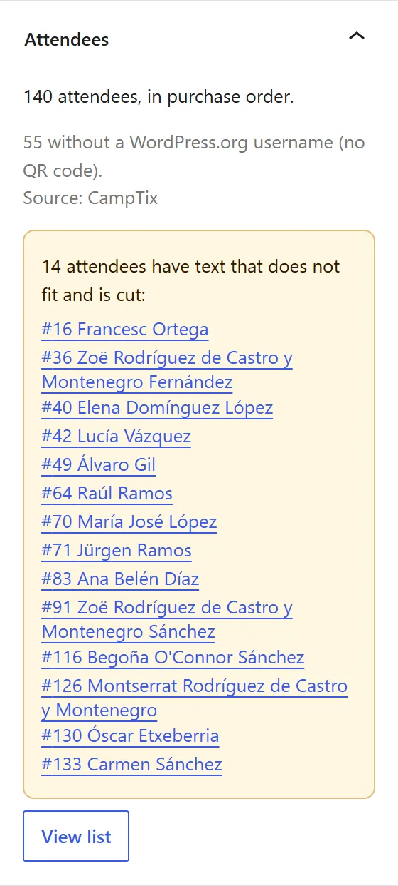
Only paid tickets get a badge. Tickets bought for someone who has not filled in their details yet are left out until they do.
Preview and generate the PDF
Preview one badge
Preview badge makes the PDF of the attendee on screen and shows it, exactly as the print shop will get it, crop marks included. Download it to print a test copy.

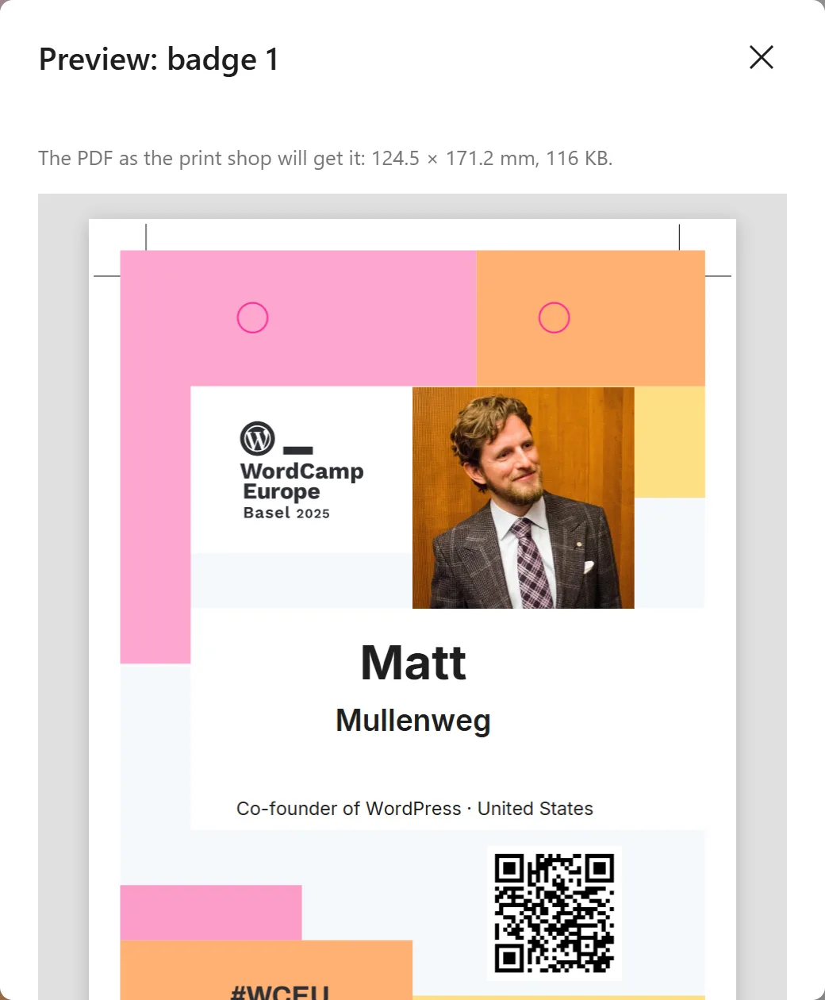
Generate all the badges
Generate PDF makes one PDF with one page per attendee. Before you start, it tells you how many badges there are, the page size, and how many have no QR code or have text that is cut.

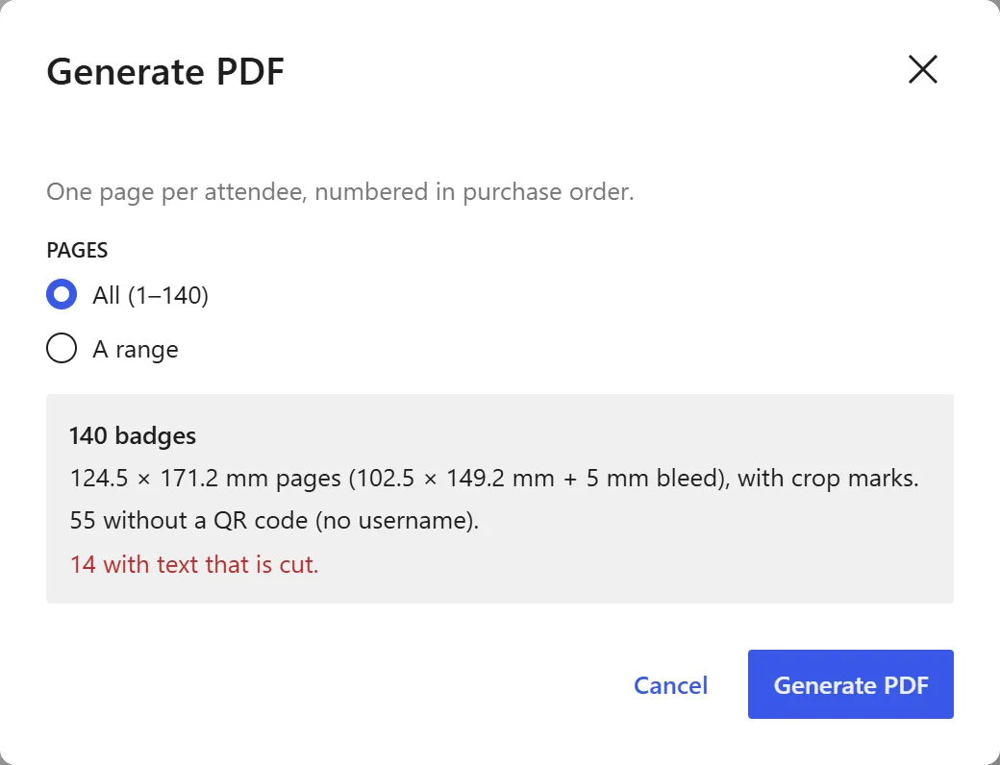
- It runs in your browser and shows its progress; you can cancel it. The demo's 140 badges take a few seconds and make an 11 MB file. Most of the time goes into downloading the Gravatars, so a big event with a slow connection may take a minute.
- Each Gravatar adds its photo to the file, about 70 KB. With a thousand attendees, all with a photo, the PDF is about 70 MB; with three thousand, over 200 MB. For big events, print in batches (below).
- The file downloads as
badges-1-140.pdf, after the pages it holds.
Print only some attendees
If your site uses CampTix admin flags (Tickets › Setup › Admin Flags), Attendees in the Generate PDF dialog prints only the attendees with one flag: for example only the volunteers, or only the organizers. Set the flags on each attendee in CampTix.
Print in batches
Badges are numbered in purchase order, never alphabetically, so new tickets are always added at the end and never shift the ones you already printed. Choose A range to print in batches: send badges 1 to 250 to the print shop a few weeks before the event, and 251 onwards when ticket sales close.

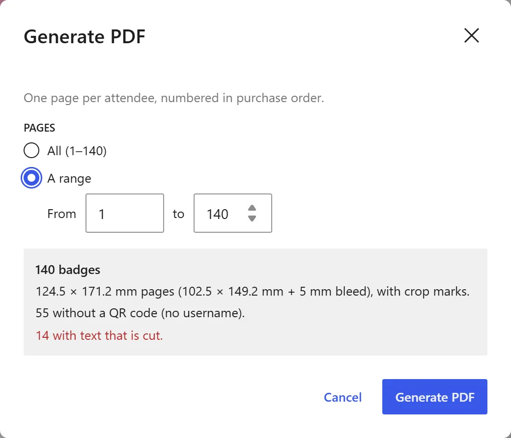
Send it to the print shop
- Each page is one badge: the trim size plus the bleed, plus room for the crop marks when they are on. Tell the print shop the trim size and the bleed, and that the file has crop marks.
- For folded badges, each page is a sheet to fold in half, with dashed fold marks on both sides at the fold. Tell the print shop it is to be cut and folded.
- With the mark for the lanyard hole on, the line at the top center shows where to punch the hole with a hole punch. On a folded badge, punch through both halves.
- Ask them for a test print of one badge first, check the colors and the cut, and scan a QR code with your phone.
- If the print shop prefers several smaller files, generate the badges in ranges.
Reuse a design
In the Document tab, Import/Export Design saves the design as a badge-design.json file and loads it on another site, for example to start next year's WordCamp from this year's badges.

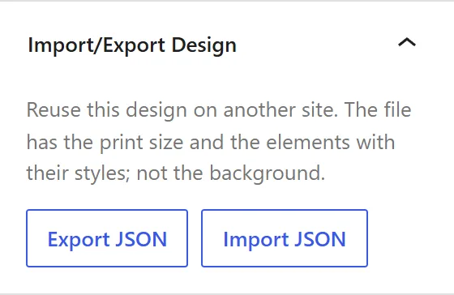
- The file holds the print size and every element with its position and style. It does not hold the background or the fallback image, which are files of the site: choose them again after importing.
- Importing asks for confirmation and can be undone. Fonts the site does not have are listed; the text uses Inter until you install them.
Privacy
- The attendee data comes from CampTix on your own site. Only administrators can open the editor.
- Email addresses never leave the server: the browser gets an anonymous Gravatar hash instead. Allergies, accessibility needs and payment data are never offered as variables.
- Your browser downloads the Gravatars directly from Gravatar to build the badges. Nothing is sent anywhere else, and the badges are not stored on the server.
- Deleting the plugin deletes the design. The background and images stay in the Media Library.
Help us test it
This plugin is being tested before it is proposed for every WordCamp site. You can help, whether or not you are organizing a WordCamp:
- Open the live demo.
- Make a badge of your own: replace the background with your WordCamp's artwork, change the print size, add a text box with a ticket question, try the Gravatar and QR code options.
- Go through the attendees and look for anything that looks wrong.
- Generate the PDF and open it. If you can, print a page at its real size and scan the QR code.
- Tell us what worked, what was confusing and what you missed.
Things we would especially like to hear about:
- Badges you have made for past WordCamps: could you make them with this editor? What is missing?
- What your print shop asked for (size, bleed, crop marks, one file or several).
- Very large events: how long the PDF takes and how big it gets.
- Other browsers and operating systems.
Share what you find in the proposal issue on GitHub: WordPress/wordcamp.org#2286. Screenshots help a lot.
Known limitations
- One design per site. For a different badge, for example for organizers or volunteers, export the design, change it, generate those badges and import it back.
- The editor needs a window of at least 960 × 560 pixels, to show the badge and its settings side by side. On a phone or a small window it shows a notice instead.